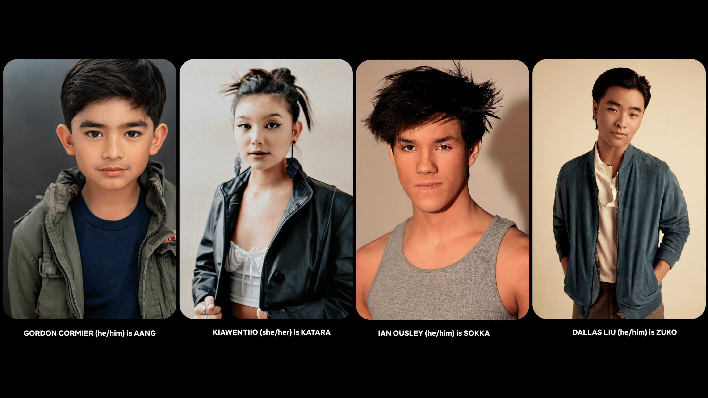

O perfil oficial da Netflix Geeked no Twitter acaba de divulgar os nomes do elenco principal da série live-action de Avatar: A Lenda de Aang.
Gordon Cormier será Aang, Kiawentiio será Katara, Ian Ousley será Sokka e Dallas Liu será Zuko.
Confira uma foto dos atores logo abaixo
Em declaração, Albert Kim, showrunner e roteirista da série, comentou a escolha do elenco: “Essa foi uma chance de ter personagens asiáticos e indígenas com atores de verdade. Não apenas em desenho.”
Além disso, Kim também reforçou que o live-action não pretende mudar ou modernizar a história original, apesar da ideia de transformar Sokka em um tiktoker ter sido real. “Imagine as possibilidades!”, brincou.
Publicado por guimarcello_